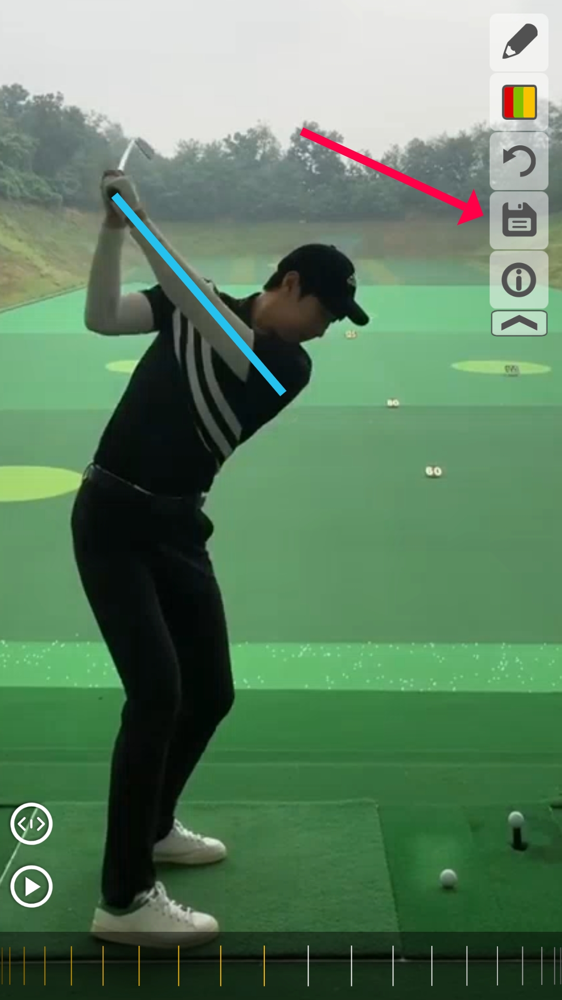
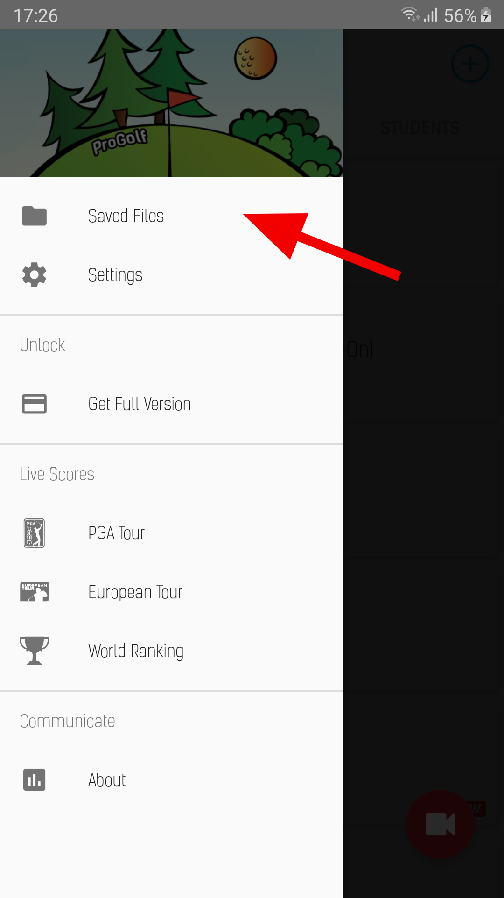

Seek to the part that you want to save.
You can do this by using the video trimmer or the scrubbing wheel, as shown below:
Video Trimmer
Video Scrubber
Shapes that are drawn onto the video will be included in the saved image
If you are happy and the position, you can press the save button.

After the image has been saved, you can find it in the "Saved Files" tab (in the menu tab on the left).
